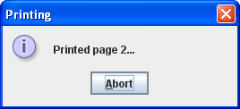

<!DOCTYPE HTML PUBLIC "-//W3C//DTD HTML 3.2//EN">
<html lang="en-US">
    <head>
        <title>How to Print Text (The Java&trade; Tutorials &gt;        
            Creating a GUI With JFC/Swing &gt; Using Other Swing Features)
</title>

     <meta name="description" content="This Swing Java Tutorial describes developing graphical user interfaces (GUIs) for applications and applets using Swing components" />
     <meta name="keywords" content="java programming, learn java, java sample code, java swing, java ui, java user interface, swing components, swing events, swing layout  " />
        
<style type="text/css">
    .FigureCaption   { 
        margin-left: 1in; 
        margin-right: 1in; 
        font-family: sans-serif; 
        font-size: smaller; 
        text-align: justify;
    }
    #TopBar_bl {
        background: url(../../images/java_bar_bl.gif) 0 100% no-repeat;
        width: 100%;
        height: 60px;
    }
    #TopBar_br {
        background: url(../../images/java_bar_br.gif) 100% 100% no-repeat;
        width: 100%;
        height: 60px;
    }
    #TopBar_tl {
        background: url(../../images/java_bar_tl.gif) 0 0 no-repeat;
        width: 100%;
        height: 60px;
    }
    #TopBar_tr {
        background: url(../../images/java_bar_tr.gif) 100% 0 no-repeat;
        width: 100%;
        height: 60px;
    }
    #TopBar {
        background: #35556B url(../../images/java_bar.gif);
        margin: 10px 10px 0 10px;
        height:60px;
        min-width:700px;
        color: white;
        font-family: sans-serif; 
        font-weight: bold;
    }
    @media print {
        #BreadCrumbs, #Download {
            display: none;
        }
    }
    #TopBar_right {
        line-height: 14px;
        float: right;
        padding-top: 2px;
        padding-right: 30px;
        text-align: center;
    }
    @media print {
        #TopBar_right {
            display: none;
        }
    }
    #TopBar_right a {
        font-size: 12px;
        margin: 3px;
        padding: 0;
    }
    #TopBar a:visited, #TopBar a:link {
        color: white;
        text-decoration: none;
    }
    #TopBar a:hover, #TopBar a:active  {
        background-color: white;
        color: #35556B;
    }
    #BreadCrumbs {
        padding: 4px 5px 0.5em 0;
        font-family: sans-serif; 
        float: right;
    }
    #BreadCrumbs a {
        color: blue;
    }
    #BreadCrumbs a:visited, #BreadCrumbs a:link {
        text-decoration: none;
    }
    #BreadCrumbs a:hover, #BreadCrumbs a:active {
        text-decoration: underline;
    }
    #PageTitle {
        margin: 0 5px 0.5em 0;
        color: #F90000;
    }    
    #PageContent{
        margin: 0 5px 0 20px;
    }
    .LeftBar_shown {
        width: 13em;
        float: left;
        margin-left: 10px;
        margin-top: 4px;
        margin-bottom: 2em;
        margin-right: 10px;
    }
    @media print {
        .LeftBar_shown {
            display: none;
        }
    }
    .LeftBar_hidden {
        display: none;
    }
    #Footer {
        padding-top: 10px;
        padding-left: 10px;
        margin-right: 10px;
    }
    
    .footertext {
        font-size: 10px;
        font-family: sans-serif; 
        margin-top: 1px;
    }
    
    #Footer2 {
        padding-top: 10px;
        padding-left: 10px;
        margin-right: 10px;
    }
    .NavBit  {
        padding: 4px 5px 0.5em 0;
        font-family: sans-serif; 
    }
    @media print {
        .NavBit {
            display: none;
        }
    }
    #TagNotes {
        text-align: right;        
    }
    
    @media print {
        #TagNotes a:visited, #TagNotes a:link {
            color: #35556B;
            text-decoration: none;
        }
    }
    #Contents a, .NavBit a, #TagNotes a {
        color: blue
    }
    #TagNotes a:visited, #TagNotes a:link,
    #Contents a:visited, #Contents a:link,
    .NavBit a:visited, .NavBit a:link {
        text-decoration: none;
    }
    #TagNotes a:hover, #TagNotes a:active,   
    #Contents a:hover, #Contents a:active,   
    .NavBit a:hover, .NavBit a:active {  
        text-decoration: underline;
    }
    #Contents {
        float: left;
        font-family: sans-serif; 
    }
    @media print {
        #Contents {
            display: none;
        }
    }
    @media screen {
        div.PrintHeaders {
            display: none;
        }
    }
    .linkLESSON, .nolinkLESSON {
        margin-left: 0.5em;
        text-indent: -0.5em
    }
    .linkAHEAD, .nolinkAHEAD, .linkQUESTIONS, .nolinkQUESTIONS   {
        margin-left: 1.5em; 
        text-indent: -0.5em
    }
    .linkBHEAD, .nolinkBHEAD   {
        margin-left: 2.5em;
        text-indent: -0.5em
    }
    .linkCHEAD, .nolinkCHEAD   {
        margin-left: 3.5em;
        text-indent: -0.5em
    }
    .nolinkLESSON, .nolinkAHEAD, .nolinkBHEAD, .nolinkCHEAD,
    .nolinkQUESTIONS {
        font-weight: bold;
        color: #F90000;
    }
    .MainFlow_indented {
        margin-right: 10px;
        margin-left: 15em;
        margin-bottom: 2em;

    }
    .MainFlow_wide {
        margin-right: 10px;
        margin-left: 10px;
        margin-bottom: 2em;

    }
    @media print {
        .MainFlow_indented, .MainFlow_wide {
            padding-top: 0;
            margin-top: 10px;
            margin-right: 10px;
            margin-left: 0;
        }
    }
    h1, h2, h3, h4, h5 {
        color: #F90000;
        font-family: sans-serif;
    }

    h1 {
        font-weight: bold;
        font-size: 20px;
    }

    h2 {
        font-weight: bold;
        font-size: 17px;
    }

    h3 {
        font-weight: bold;
        font-size: 14px;
    }

    h4 {
        font-size: 15px;
    }

    h5 {
        font-size: 12px;
    }


    #ToggleLeft {
        display: none;
    }
    
    .note {
        margin: 0 30px 0px 30px;
    }
    
    .codeblock {
        margin: 0 30px 0px 30px;
    }

    /t

</style>
<script type="text/javascript">
    function leftBar() {
        var nameq = 'tutorial_showLeftBar='
        var cookies = document.cookie.split(';');
        for (var i = 0; i < cookies.length; i++) {
            var cookieString = cookies[i];
            while (cookieString.charAt(0) == ' ') {
                cookieString = cookieString.substring(1, cookieString.length);
            }
            if (cookieString.indexOf(nameq) == 0) {
                cookieValue =  cookieString.substring(nameq.length,
                        cookieString.length);
                return cookieValue == 'yes';
            }
        }
        return true;
    }

    function showLeft(b) {
        var contents = document.getElementById("LeftBar");
        var main = document.getElementById("MainFlow");
        var toggle = document.getElementById("ToggleLeft");
        if (b) {
            contents.className = "LeftBar_shown";
            main.className = "MainFlow_indented";
            toggle.innerHTML = "Hide the TOC";
            document.cookie = 'tutorial_showLeftBar=yes; path=/';
        } else {
            contents.className = "LeftBar_hidden";
            main.className = "MainFlow_wide";
            toggle.innerHTML = "Show the TOC";
            document.cookie = 'tutorial_showLeftBar=no; path=/';
        }
    }

    function toggleLeft() {
        showLeft(document.getElementById("LeftBar").className ==
                "LeftBar_hidden");
        document.getElementById("ToggleLeft").blur();
    }

    function load() {
        showLeft(leftBar());
        document.getElementById("ToggleLeft").style.display="inline";
    }
    
</script>
<noscript> 
A browser with JavaScript enabled is required for this page to operate properly.
</noscript>

    </head>
<body onload="load()">
    <div id=TopBar> <div id=TopBar_tr> <div id=TopBar_tl> <div id=TopBar_br> <div id=TopBar_bl> 
                        <div id=TopBar_right> 
                            <a target="_blank"
                                href="http://java.sun.com/javase/6/download.jsp">Download
                                the JDK</a>
                            <br>
                            <a href="../../search.html" target="_blank">Search the
                                Tutorials</a>
                            <br>
                            <a href="javascript:toggleLeft()"
                                id="ToggleLeft">Hide the TOC</a>
                        </div>
                    </div> </div> </div> </div> </div>
    <div class=PrintHeaders>
        <b>Trail:</b> Creating a GUI With JFC/Swing
        <br><b>Lesson:</b> Using Other Swing Features
    </div>

    <div id=LeftBar class=LeftBar_shown>
        <div id=Contents>
            <div class="linkLESSON"><a href="index.html">Using Other Swing Features</a></div>
<div class="linkAHEAD"><a href="desktop.html">How to Integrate with the Desktop Class</a></div>
<div class="linkAHEAD"><a href="trans_shaped_windows.html">How to Create Translucent and Shaped Windows</a></div>
<div class="linkAHEAD"><a href="jlayer.html">How to Decorate Components with the JLayer Class</a></div>
<div class="linkAHEAD"><a href="action.html">How to Use Actions</a></div>
<div class="linkAHEAD"><a href="timer.html">How to Use Swing Timers</a></div>
<div class="linkAHEAD"><a href="access.html">How to Support Assistive Technologies</a></div>
<div class="linkAHEAD"><a href="focus.html">How to Use the Focus Subsystem</a></div>
<div class="linkAHEAD"><a href="keybinding.html">How to Use Key Bindings</a></div>
<div class="linkAHEAD"><a href="modality.html">How to Use Modality in Dialogs</a></div>
<div class="linkAHEAD"><a href="printtable.html">How to Print Tables</a></div>
<div class="nolinkAHEAD">How to Print Text</div>
<div class="linkAHEAD"><a href="splashscreen.html">How to Create a Splash Screen</a></div>
<div class="linkAHEAD"><a href="systemtray.html">How to Use the System Tray</a></div>
<div class="linkAHEAD"><a href="problems.html">Solving Common Problems Using Other Swing Features</a></div>
</div>
    </div>
    <div id=MainFlow class=MainFlow_indented>
            <span id=BreadCrumbs>
                <a href=../../index.html target=_top>Home Page</a>
                &gt;
                <a href=../index.html target=_top>Creating a GUI With JFC/Swing</a>
                &gt;
                <a href=index.html target=_top>Using Other Swing Features</a>
            </span>
            <div class=NavBit>
                <a target=_top href=printtable.html>&laquo;&nbsp;Previous</a>&nbsp;&bull;&nbsp;<a target=_top href=../TOC.html>Trail</a>&nbsp;&bull;&nbsp;<a target=_top href=splashscreen.html>Next&nbsp;&raquo;</a>
            </div>
            <div id=PageTitle><h1>How to Print Text</h1></div>
            <div id=PageContent>
The <code>JTextComponent</code> class provides support
for printing text documents.
The <code>JTextComponent</code> API includes methods that 
allow you to implement both basic and advanced printing tasks.
Supported formats include HTML, RTF, and plain text.
For common printing tasks such as simply printing a text document,
use the <code>print</code> method directly. 
The <code>print</code> method 
has several forms with various argument sets. 
This method prepares your text document,
gets a corresponding <code>Printable</code> object,
and sends it to a printer. 
<p>
If the default implementation of the <code>Printable</code> object
does not meet your needs, you
can customize the printing layout
by overriding the <code>getPrintable</code> method
to wrap the default <code>Printable</code>
or even replace it altogether.
<p>
The easiest way to print your text component is to call
the <code>print</code> method
without parameters. See the code example below.
<p>
<div class="codeblock"><pre>
try {
    boolean complete = textComponent.print();
    if (complete) {
        /* show a success message  */
        ...
    } else {
        /*show a message indicating that printing was cancelled */
        ...
    }
} catch (PrinterException pe) {
    /* Printing failed, report to the user */
    ...
}
</pre></div>

When you call the <code>print</code> method
with no parameters, a print dialog is displayed, and then your text component
is printed interactively without a header or a footer.
The code example below shows the <code>print</code> method signature
with the complete set of arguments.
<p>
<div class="codeblock"><pre>
boolean complete = textComponent.print(MessageFormat headerFormat,
          		               MessageFormat footerFormat, 
                                       boolean showPrintDialog,
                                       PrintService service
			               PrintRequestAttributeSet attributes,
                                       boolean interactive);
</pre></div>
When you call the <code>print</code> method with all arguments,
you explicitly choose printing features such as
header and footer text, printing attributes, a destination print service,
and also whether to show a print dialog or not,
and whether to print interactively or non-interactively.
To decide which parameters suit your needs best,
see the description of available features below.

<p>
The <code>JTextComponent</code> printing API provides the following features:
<ul>
<li><a href="#interactively">Printing Interactively or Non-interactively</a>
<li><a href="#dialog">Displaying a Print Dialog</a>
<li><a href="#header">Adding a Header or a Footer (or Both) to a Printing Layout</a>
<li><a href="#layout">Automatic Layout and Pagination</a>
</ul>

<h2>
<a name="interactively">Printing Interactively or Non-interactively</a>
</h2>

In interactive mode
a progress dialog with an abort option
is shown for the duration of printing.
Here is a sample of a progress dialog.

<p><center></center></p>
This dialog allows the user to keep track of printing progress.
The progress dialog is modal when the <code>print</code> method is called
on the event dispatch thread and non-modal otherwise.
It is important that your document
remain unchanged while being printed, otherwise 
the printing behavior is undefined.
The <code>print</code> method
ensures that your document will not be changed and
disables the component for the duration of printing.
<p>
If you call the <code>print</code> method on the event dispatch thread
in non-interactive mode, then all events including repaints will be blocked.
That is why printing non-interactively on EDT is only recommended
for applications with non-visible GUI.
<h2>
<a name="dialog">Print Dialog</a>
</h2>
You can display a standard print dialog
which allows the user to do the following:
<ul>
<li>Select a printer
<li>Specify number of copies
<li>Change printing attributes
<li>Cancel printing before it has been started
<li>Start printing
</ul>

<p><center></center></p>
<p>
You may notice that the print dialog does not specify 
the total number of pages in the printout. This is because
the text printing implementation uses the <code>Printable</code> API
and the total number of pages is not known before printing time.

<h2>
<a name="header">Adding a Header or a Footer (or Both) to a Printing Layout</a>
</h2>

Headers and footers are provided by
<a class="APILink" target="_blank" href="http://download.oracle.com/javase/7/docs/api/java/text/MessageFormat.html"><code>MessageFormat</code></a> parameters. These parameters allow the header and footer to be localized. 
Read the documentation for the
<a class="APILink" target="_blank" href="http://download.oracle.com/javase/7/docs/api/java/text/MessageFormat.html"><code>MessageFormat</code></a> class as characters such as single quotes are special
and need to be avoided.
Both headers and footers are centered. 
You can insert a page number by using <code>{0}</code>.
<p>
<code>
MessageFormat footer = new MessageFormat("Page - {0}");
</code>
<p>
Since the total number of pages in the output is not known
before printing time,
there is no way to specify a numbering format
like "Page 1 of 5".


<h2>
<a name="layout">Automatic Layout and Pagination
</h2>
With the use of the <code>JTextComponent</code> printing API you do not need
to take care of layout and pagination. 
Both layout and pagination are done automatically. 
The document content is formatted to fit the page size
and spreads across multiple pages.
You only need to specify an appropriate footer text format
to the <code>print</code> method
if you want to insert a page number in the footer.
As demonstrated earlier, you can specify the page number in your footer by including
<code>"{0}"</code> in the string given to the <code>MessageFormat</code>
footer parameter. In the printed output,
{0} will be replaced by the current page number.

<h2>
<a name="example1">Text Area Printing Example
</h2>
Let us look at an example called <code>TextAreaPrintingDemo</code>.
The main feature of this demo is printing a text document
either on the event dispatch thread
or on a background thread depending on the user's choice.
This demo displays a text area, allows to select several printing features,
and prints the text area's content
according to the selected options.
The entire code for this program can be found in

<a class="SourceLink" target="_blank" href="../examples/misc/TextAreaPrintingDemoProject/src/misc/TextAreaPrintingDemo.java"><code>TextAreaPrintingDemo.java</code></a>.
This demo's rich GUI is built in the
<a class="TutorialLink" target="_top" href="http://netbeans.org/kb/docs/java/quickstart-gui.html">NetBeans IDE GUI builder</a>. 
Here is a picture of the <code>TextAreaPrintingDemo</code> application.


<p><center></center></p>
<div class="note"><hr><strong>Try this:</strong>&nbsp;
<ol>
<li>Click the Launch button
    to run TextAreaPrintingDemo </a>
using
<a class="TutorialLink" target="_top" href="http://java.sun.com/products/javawebstart/index.jsp ">Java&trade; Web Start </a>
(<a href="http://java.sun.com/javase/downloads/index.jsp">download JDK 6</a>).

    Alternatively, to compile and run the example yourself,
    consult the <a href="../examples/misc/index.html#TextAreaPrintingDemo">example index</a>.

<p><center>
<a href="http://download.oracle.com/javase/tutorialJWS/uiswing/misc/ex6/TextAreaPrintingDemo.jnlp">
</a></center></p>

<li>Edit the text in the Header or Footer checkboxes or both
    to provide a different header or footer.
    
<li>Clear the Show Progress Dialog checkbox if you want
    to print without displaying a progress dialog,
    which means printing non-interactively. Note that
    you will not be able to cancel printing once it has been started.

<li>Clear the Print in Background checkbox to select printing
    on the event dispatch thread. Note that printing on EDT non-interactively
    will make your application unresponsive &mdash; interaction with
    your application will be blocked for the duration of the printing process.
    
<li>Click the Print button to print the text area's content
    according to the selected options.
</ol>

Whenever a web-launched application tries to print,
Java Web Start opens up a security dialog
asking the user for permission to print
unless this permission has already been granted in the system settings.
To proceed with printing the user has to accept the request.

<p>
An action listener is registered for the Print button.
As the user clicks the Print button the <code>actionPerformed</code> method
calls the <code>print</code> method, which
initiates a printing task. 
The printing task is a <code>SwingWorker</code> object.
The code example below shows how the <code>PrintingTask</code> class is implemented.
<div class="codeblock"><pre>
private class PrintingTask extends SwingWorker<Object, Object> {
        private final MessageFormat headerFormat;
        private final MessageFormat footerFormat;
        private final boolean interactive;
        private volatile boolean complete = false;
        private volatile String message;
        
        public PrintingTask(MessageFormat header, MessageFormat footer,
                            boolean interactive) {
            this.headerFormat = header;
            this.footerFormat = footer;
            this.interactive = interactive;
        }
        
        @Override
        protected Object doInBackground() {
            try {
                complete = text.print(headerFormat, footerFormat,
                        true, null, null, interactive);
                message = "Printing " + (complete ? "complete" : "canceled");
            } catch (PrinterException ex) {
                message = "Sorry, a printer error occurred";
            } catch (SecurityException ex) {
                message =
                    "Sorry, cannot access the printer due to security reasons";
            }
            return null;
        }
        
        @Override
        protected void done() {
            message(!complete, message);
        }
    }
</pre></div>

 
The code example below shows how the <code>print</code> method
obtains the set of selected options from the GUI components,
then creates an instance of the <code>PrintingTask</code> class,
and performs printing.
<div class="codeblock"><pre>
private void print(java.awt.event.ActionEvent evt) {
        MessageFormat header = createFormat(headerField);
        MessageFormat footer = createFormat(footerField);
        boolean interactive = interactiveCheck.isSelected();
        boolean background = backgroundCheck.isSelected();

        PrintingTask task = new PrintingTask(header, footer, interactive);
	<b>if (background) {
            task.execute();
        } else {
            task.run()
        }</b>
    }
</pre></div>
The code in bold illustrates how <code>PrintingTask</code>'s methods are invoked
depending on the <code>background</code> parameter's value.
Whenever the user prefers to print on a background thread,
the <code>execute</code> method is called, which schedules the printing task 
for the execution on a background thread. 
Otherwise the <code>run</code> method
performs the printing task on EDT.

<p>
Since printing large documents is a time-consuming task,
it is recommended to perform printing on a background thread.

<h2>
<a name="example2">Text Batch Printing Example
</h2>

The <code>TextBatchPrintingDemo</code> example illustrates printing non-visible
HTML text documents on background threads. 
When launched, this demo displays a page with a list of URLs.
You can visit an HTML page, add the displayed page to the print list,
and once you select all pages that you need,
you can print them all at once on background threads.
The entire code for this program can be found in

<a class="SourceLink" target="_blank" href="../examples/misc/TextBatchPrintingDemoProject/src/misc/TextBatchPrintingDemo.java"><code>TextBatchPrintingDemo.java</code></a>.
Here is a picture of the <code>TextBatchPrintingDemo</code> application.


<p><center></center></p>
<div class="note"><hr><strong>Try this:</strong>&nbsp;
<ol>
<li>Click the Launch button
    to run TextBatchPrintingDemo 
using
<a class="TutorialLink" target="_top" href="http://java.sun.com/products/javawebstart/index.jsp ">Java&trade; Web Start </a>
(<a href="http://java.sun.com/javase/downloads/index.jsp">download JDK 6</a>).

    Alternatively, to compile and run the example yourself,
    consult the <a href="../examples/misc/index.html#TextBatchPrintingDemo">example index</a>.

<p><center>
<a href="http://download.oracle.com/javase/tutorialJWS/uiswing/misc/ex6/TextBatchPrintingDemo.jnlp">
</a></center></p>

<li>Click on any link to view the corresponding HTML page.
<li>Press ALT+A or choose File > Add Page menu item
    to add the displayed page to a print list shown on the right.
<li>Press ALT+H or choose File > Home Page menu item
    to return to the demo's home page.
<li>Add as many pages to the print list as you need.
<li>Press ALT+C or choose File > Clear Selected menu item
    if you need to clear the print list and build at again.
<li>Press ALT+P or choose File > Print Selected menu item
    to print the selected pages.
<li>Press ALT+Q or choose File > Quit menu item
    to quit the application.
</ol>
You can find the printing code in the <code>printSelectedPages</code> method.
When called, this method first obtains the amount of pages selected for printing.
The code example below shows how 
the <code>printSelectedPages</code> method
creates a <code>Runnable</code> object for each page and then prints
the current page on a separate thread.
<div class="codeblock"><pre>
for (int i = 0; i < n; i++) {
    final PageItem item = (PageItem) pages.getElementAt(i);
    // This method is called from EDT.  Printing is a time-consuming
    // task, so it should be done outside EDT, in a separate thread.
    Runnable printTask = new Runnable() {
        public void run() {
            try {
                item.print(
                        // Two "false" args mean "no print dialog" and
                        // "non-interactive" (ie, batch-mode printing).
                                null, null, false, printService, null, false);
            } catch (PrinterException pe) {
                JOptionPane.showMessageDialog(null,
                        "Error printing " + item.getPage() + "\n" + pe,
                        "Print Error", JOptionPane.WARNING_MESSAGE);
            }
        }
    };
    new Thread(printTask).start();
</pre></div>


<h2>
Text Printing API
</h2>

This section lists methods defined in the <code>JTextComponent</code> class
that allow you to print text documents.

<p>
<table border=1 summary="JTextComponent methods for printing text">
<tr>
<th id="h1" align=center>Method</th>
<th id="h2" align=center>Purpose</th>
</tr>
  <tr>
    <td headers="h1">
<a class="APILink" target="_blank" href="http://download.oracle.com/javase/7/docs/api/javax/swing/text/JTextComponent.html#print()">boolean print()</a>    <br>

<a class="APILink" target="_blank" href="http://download.oracle.com/javase/7/docs/api/javax/swing/text/JTextComponent.html#print(java.text.MessageFormat, java.text.MessageFormat)">boolean print(MessageFormat, MessageFormat)</a>    <br>
<a class="APILink" target="_blank" href="http://download.oracle.com/javase/7/docs/api/javax/swing/text/JTextComponent.html#print(java.text.MessageFormat, java.text.MessageFormat, boolean, javax.print.PrintService, javax.print.attribute.PrintRequestAttributeSet, boolean)">boolean print(MessageFormat, MessageFormat, boolean, PrintRequestAttributeSet, boolean, PrintService)</a>    </td>
    <td headers="h2">When called without arguments, displays a print dialog, 
        and then prints this text component interactively
	without a header or a footer text.
	Returns <code>true</code> if the user continued printing
        and <code>false</code> if the user cancelled printing.
        <br>
	When called with the two <code>MessageFormat</code> arguments,
	displays a print dialog, and then prints
	this text component interactively
	with the specified header and footer text.
	<br>
	When called with a full set of arguments, prints this text component
	according to the specified arguments.
	The two <code>MessageFormat</code> arguments specify header and footer text.
	The first boolean argument defines whether to show a print dialog or not.
	Another boolean argument specifies whether to print interactively or not.
	With two other arguments you can specify printing attributes and a print service.
	<br>
	Whenever a <code>PrintService</code> argument is omitted, 
	the default printer will be used.
        

    </td>
  </tr>
  <tr>
    <td headers="h1">
<a class="APILink" target="_blank" href="http://download.oracle.com/javase/7/docs/api/javax/swing/text/JTextComponent.html#getPrintable(java.text.MessageFormat, java.text.MessageFormat)">Printable getPrintable(MessageFormat, MessageFormat)</a>    
    </td>
    <td headers="h2">Returns a <code>Printable</code> object for printing your text component.
        Override this method to get a customized Printable object.
	You can wrap one Printable object into another in order to obtain
	complex reports and documents.
        
    </td>
  </tr>

</table>


<h2>
<a name="eg">Examples That Use Text Printing</a>
</h2>
This table lists examples that use text printing
and points to where those examples are described.

<p>
<table summary="list of examples that use text printing">
<tr>
<th id="h101" align=left> Example</th>
<th id="h102" align=left> Where Described</th>
<th id="h103" align=left> Notes</th>
</tr>

<tr>
<td headers="h101" valign=top><a href="../examples/misc/index.html#TextAreaPrintingDemo">
    <code>TextAreaPrintingDemo</code></a>
</td>
<td headers="h102" valign=top>This page
</td>
<td headers="h103" valign=top>Demonstrates the basics of text printing and provides a rich GUI. 
    Allows the user to specify header or footer text,
    turn the print dialog on or off, select printing interactively
    or non-interactively, and then print according to the selected options.
</td>
</tr>

<tr>
<td headers="h101" valign=top><a href="../examples/misc/index.html#TextBatchPrintingDemo">
    <code>TextBatchPrintingDemo</code></a>
<td headers="h102" valign=top>This page
</td>
<td headers="h103" valign=top>This demo displays a text component with a list of URLs,
    allows the user to view HTML pages, add them to the print list, 
    and print all selected pages at once on background threads.
</td>
</tr>


</table>
        </div>
        <div class=NavBit>
            <a target=_top href=printtable.html>&laquo; Previous</a>
            &bull;
            <a target=_top href=../TOC.html>Trail</a>
            &bull;
            <a target=_top href=splashscreen.html>Next &raquo;</a>
        </div>
    </div>
    <div id=Footer2>
<hr>
<div id=TagNotes>
    <p class="footertext">Problems with the examples? Try <a target="_blank"
        href=../../information/run-examples.html>Compiling and Running
        the Examples: FAQs</a>.
    <br>
    Complaints? Compliments? Suggestions? <a target="_blank"
        href="http://download.oracle.com/javase/feedback.html">Give
    us your feedback</a>.
    </p>
</div> 

<div id=Footer>
<p class="footertext"><a name="license_info">Your use of this</a> page and all the material on pages under &quot;The Java Tutorials&quot; banner,
and all the material on pages under &quot;The Java Tutorials&quot; banner is subject to the <a href="../../information/license.html">Java SE Tutorial Copyright
and License</a>.
Additionally, any example code contained in any of these Java
Tutorials pages is licensed under the
<a href="http://developers.sun.com/license/berkeley_license.html">Code
Sample License</a>.
</p>
<table border="0" cellspacing="0" cellpadding="5" summary="">
    <tr>
         <td headers="h201" width="20%">
	 <table width="100%" border="0" cellspacing="0" cellpadding="5">
            <tr>
              <td headers="h201" align="center"></td>
              <td headers="h202" align="left" valign="middle"></td>
           </tr>
          </table>
          </td>

          <td width="55%" valign="middle" align="center">
		<p class="footertext"><a href="http://www.oracle.com/us/corporate/index.html">About Oracle</a> | <a href="http://www.oracle.com/technology/index.html">Oracle Technology Network</a> | <a href="https://www.samplecode.oracle.com/servlets/CompulsoryClickThrough?type=TermsOfService">Terms of Service</a></p> 
	 </td>
          <td width="25%" valign="middle" align="right">
      		<p class="footertext">Copyright &copy; 1995, 2011 Oracle and/or its affiliates. All rights reserved.</p>
	 </td>
     </tr>     
</table>
</div>
    </div>
    <div class=PrintHeaders>
        <b>Previous page:</b> How to Print Tables
        <br><b>Next page:</b> How to Create a Splash Screen
    </div>

<!-- Start SiteCatalyst code   -->
<script language="JavaScript" src="http://www.oracle.com/ocom/groups/systemobject/@mktg_admin/documents/systemobject/s_code_download.js"></script>
<script language="JavaScript" src="http://www.oracle.com/ocom/groups/systemobject/@mktg_admin/documents/systemobject/s_code.js"></script>
<noscript> 
A browser with JavaScript enabled is required for this page to operate properly.
</noscript>
 
<!-- ********** DO NOT ALTER ANYTHING BELOW THIS LINE ! *********** -->
<!--  Below code will send the info to Omniture server -->
<script language="javascript">var s_code=s.t();if(s_code)document.write(s_code)</script>

 
<!-- End SiteCatalyst code -->

</body>
</html> 
